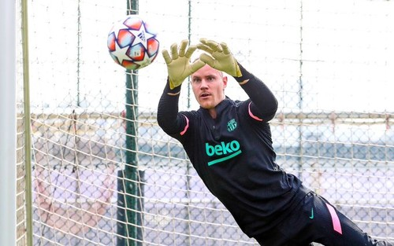
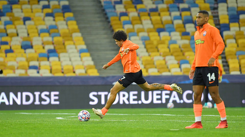
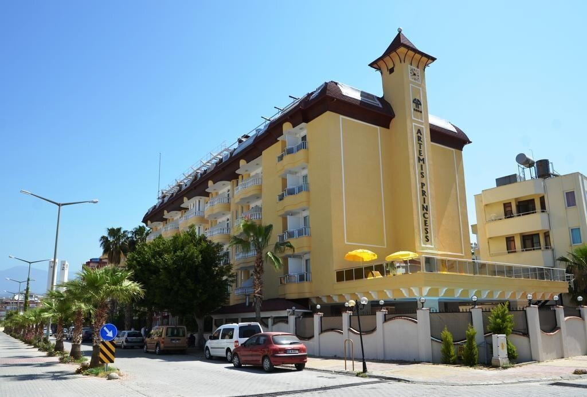
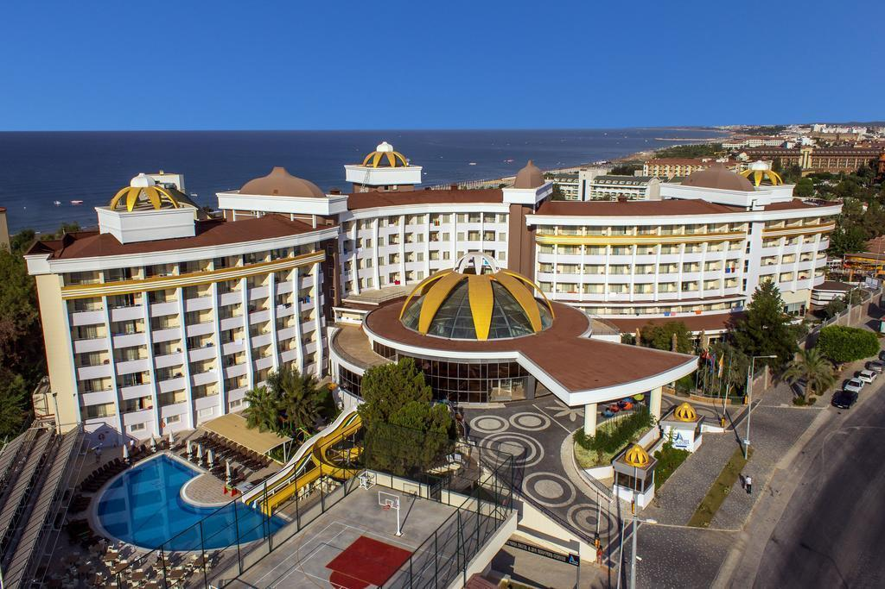
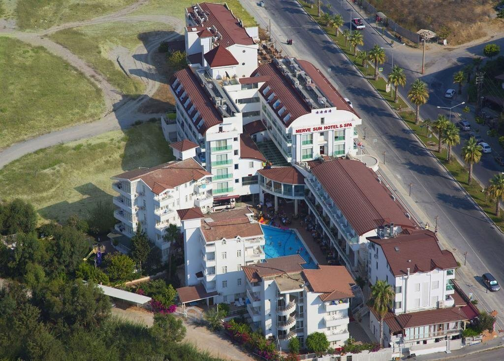

Андреа ПИРЛО: «Завтра Дибала может получить отдых»
«Очки очень важны, но самое главное – продолжать работу над нашим проектом. Мы должны контролировать мяч, должны контролировать игру. Это даст нам дополнительные шансы одержать победу.
Подробнее
Барселона – Динамо. Вспомним 1997 год?
Две недели назад «Шахтер» сенсационно обыграл в гостях мадридский «Реал». Под силу ли «Динамо» повторить этот успех в поединке с другим испанским грандом – «Барселоной»? В последний раз «Динамо» побеждало «Барселону» 23 года назад, и те победы до сих пор вписаны золотыми буквами в историю киевского клуба
Подробнее

Шахтер – Боруссия М. Видео голов и обзор матча (обновляется) (обновляется) (обновляется) (обновляется)
Во вторник, 3-го ноября, состоится поединок третьего тура Лиги чемпионов, в котором встретятся донецкий «Шахтер» и менхенгладбахская «Боруссия». Матч пройдет в Киеве на НСК «Олимпийский», начало – в 19:55.
Подробнее

Artemis Princess
Система "Все включено" действует с 10:30-23:30, включает безалкогольные и алкогольные напитки местного производства.
- завтрак с 07:00-10:00, обед с 12:30-14:00, ужин с 19:30-21:15 "шведский стол"
- в дневное время предлагаются закуски в баре отеля
Подробнее

Side Alegria Hotel & Spa (ex. Holiday Point Hotel & Spa)
Спа-отель Side Alegria с собственным пляжем, бассейнами, водными горками и спа-центром расположен в городе Сиде на территории курортного района Кумкой. Гости могут воспользоваться фитнес-центром и спа-центром с широким выбором косметических процедур.
Подробнее

Merve Sun Hotel & Spa
Спа-отель MERVE SUN HOTEL & SPA 4* находится в районе Сиде, располагает частным пляжем и открытым бассейном с водной горкой. Отель предлагает просторные номера с гостиным уголком, кондиционером, спутниковым телевидением, балконом с видом на окрестности, WiFi.
Подробнее